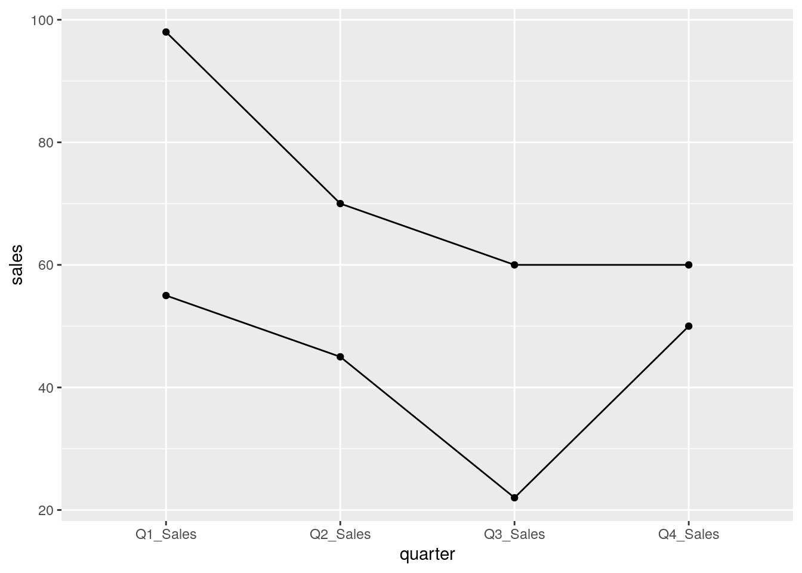
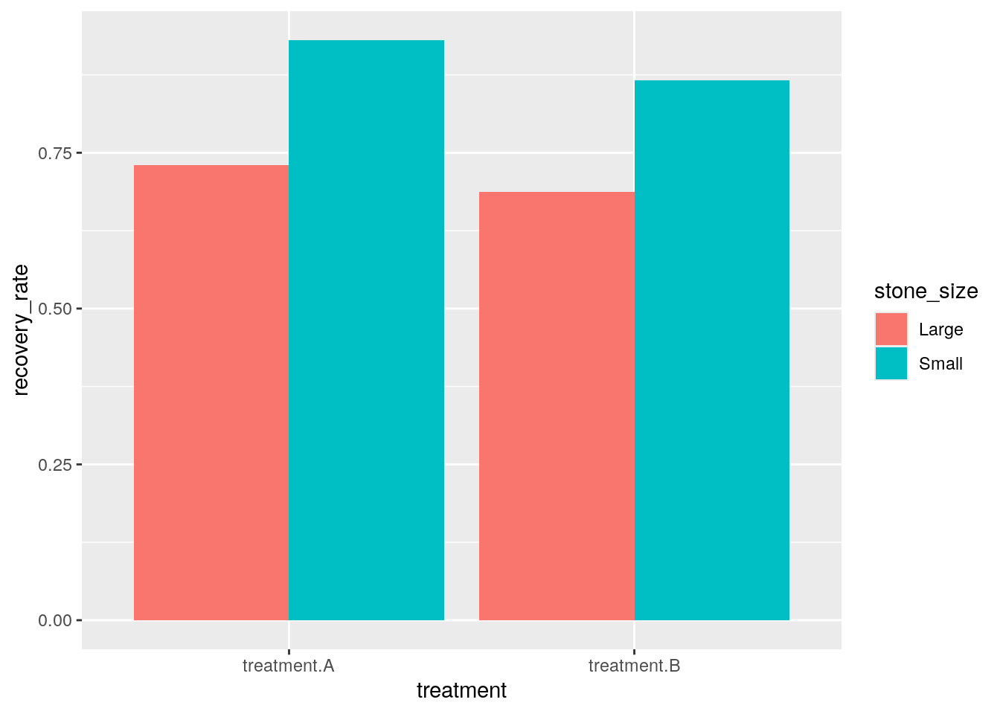

Chapter 4 Data Cleaning, Part 2
Another important data cleaning step is to make sure that the shape of the data is useful for the analysis. Today, we will learn about a data organizing standard called Tidy Data, and some common transformations of making a dataframe longer and wider to get there.
4.1 Tidy Data
It is important to have standard of organizing data, as it facilitates a consistent way of thinking about data organization and building tools (functions) that make use of that standard. The principles of Tidy data, developed by Hadley Wickham:
Each variable must have its own column.
Each observation must have its own row.
Each value must have its own cell.
If we want to be technical about what variables and observations are, Hadley Wickham describes:
A dataset is a collection of values, usually either numbers (if quantitative) or strings (if qualitative). Every value belongs to a variable and an observation. A variable contains all values that measure the same underlying attribute (like height, temperature, duration) across units. An observation contains all values measured on the same unit (like a person, or a day, or a race) across attributes.

Besides a standard, Tidy data is useful because many tools in R are most effective when your data is in a Tidy format. This includes data visualization with ggplot, regression models, databases, and more.
At first glance, it seems hard to go wrong with these simple criteria of Tidy data! However, in reality, many dataframes we load in aren’t Tidy, and it’s easiest seen through counterexamples and how to fix it. Here are some common ways that data becomes un-Tidy:
Columns contain values of variables, rather than variables
Variables are stored in rows
Multiple variables are stored in a single column
After some clear examples, we emphasize that “Tidy” data is subjective to what kind of analysis you want to do with the dataframe.
4.1.1 1. Columns contain values, rather than variables (Long is tidy)
df = data.frame(Store = c("A", "B"),
Year = c(2018, 2018),
Q1_Sales = c(55, 98),
Q2_Sales = c(45, 70),
Q3_Sales = c(22, 60),
Q4_Sales = c(50, 60))
df## Store Year Q1_Sales Q2_Sales Q3_Sales Q4_Sales
## 1 A 2018 55 45 22 50
## 2 B 2018 98 70 60 60Each observation is a store, and each observation has its own row. That looks good.
The columns “Q1_Sales”, …, “Q4_Sales” seem to be values of a single variable “quarter” of our observation. The values of “quarter” are not in a single column, but are instead in the columns.
df_long = pivot_longer(df, c("Q1_Sales", "Q2_Sales", "Q3_Sales", "Q4_Sales"), names_to = "quarter", values_to = "sales")
df_long## # A tibble: 8 × 4
## Store Year quarter sales
## <chr> <dbl> <chr> <dbl>
## 1 A 2018 Q1_Sales 55
## 2 A 2018 Q2_Sales 45
## 3 A 2018 Q3_Sales 22
## 4 A 2018 Q4_Sales 50
## 5 B 2018 Q1_Sales 98
## 6 B 2018 Q2_Sales 70
## 7 B 2018 Q3_Sales 60
## 8 B 2018 Q4_Sales 60Now, each observation is a store’s quarter, and each observation has its own row.
The new columns “quarter” and “sales” are variables that describes our observation, and describes our values. We’re in a tidy state!
We have transformed our data to a “longer” format, as our observation represents something more granular or detailed than before. Often, the original variables values will repeat itself in a “longer format”. We call the previous state of our dataframe is a “wider” format.
4.1.2 2. Variables are stored in rows (Wide is tidy)
Are all tidy dataframes Tidy in a “longer” format?
df2 = data.frame(Sample = c("A", "B"),
KRAS_mutation = c(TRUE, FALSE),
KRAS_expression = c(2.3, 3.9))
df2## Sample KRAS_mutation KRAS_expression
## 1 A TRUE 2.3
## 2 B FALSE 3.9Each observation is a sample, and each observation has its own row. Looks good. Each variable has its own column, and no values are in columns.
What happens if we make it longer?
df2_long = pivot_longer(df2, c("KRAS_mutation", "KRAS_expression"), names_to = "gene", values_to = "values")
df2_long## # A tibble: 4 × 3
## Sample gene values
## <chr> <chr> <dbl>
## 1 A KRAS_mutation 1
## 2 A KRAS_expression 2.3
## 3 B KRAS_mutation 0
## 4 B KRAS_expression 3.9Here, each observation is a sample’s gene…type? The observation feels awkward because variables are stored in rows. Also, the column “values” contains multiple variable types: gene expression and mutation values that got coerced to numeric!
To make this dataframe wider,
df2_long_wide = pivot_wider(df2_long, names_from = "gene", values_from = "values")
df2_long_wide$KRAS_mutation = as.logical(df2_long_wide$KRAS_mutation)
df2_long_wide## # A tibble: 2 × 3
## Sample KRAS_mutation KRAS_expression
## <chr> <lgl> <dbl>
## 1 A TRUE 2.3
## 2 B FALSE 3.9We are back to our orignal form, and it was already Tidy.
4.1.3 3. Multiple variables are stored in a single column
## # A tibble: 6 × 3
## country year rate
## <chr> <dbl> <chr>
## 1 Afghanistan 1999 745/19987071
## 2 Afghanistan 2000 2666/20595360
## 3 Brazil 1999 37737/172006362
## 4 Brazil 2000 80488/174504898
## 5 China 1999 212258/1272915272
## 6 China 2000 213766/1280428583There seems to be two variables in the numerator and denominator of “rate” column. Let’s separate it.
## # A tibble: 6 × 4
## country year count population
## <chr> <dbl> <chr> <chr>
## 1 Afghanistan 1999 745 19987071
## 2 Afghanistan 2000 2666 20595360
## 3 Brazil 1999 37737 172006362
## 4 Brazil 2000 80488 174504898
## 5 China 1999 212258 1272915272
## 6 China 2000 213766 12804285834.2 Uses of Tidy data
In general, many functions for analysis and visualization in R assumes that the input dataframe is Tidy. These tools assumes the values of each variable fall in their own column vector. For instance, from our first example, we can compare sales across quarters and stores.
## # A tibble: 8 × 4
## Store Year quarter sales
## <chr> <dbl> <chr> <dbl>
## 1 A 2018 Q1_Sales 55
## 2 A 2018 Q2_Sales 45
## 3 A 2018 Q3_Sales 22
## 4 A 2018 Q4_Sales 50
## 5 B 2018 Q1_Sales 98
## 6 B 2018 Q2_Sales 70
## 7 B 2018 Q3_Sales 60
## 8 B 2018 Q4_Sales 60
Although in its original state we can also look at sales between quarter, we can only look between two quarters at once. Tidy data encourages looking at data in the most granular scale.

4.3 Subjectivity in Tidy Data
We have looked at clear cases of when a dataset is Tidy. In reality, the Tidy state depends on what we call variables and observations. Consider this example, inspired by the following blog post by Damien Martin.
kidney = data.frame(stone_size = c("Small", "Large"),
treatment.A_recovered = c(81, 192),
treatment.A_failed = c(6, 71),
treatment.B_recovered = c(234, 55),
treatment.B_failed = c(36, 25))
kidney## stone_size treatment.A_recovered treatment.A_failed treatment.B_recovered
## 1 Small 81 6 234
## 2 Large 192 71 55
## treatment.B_failed
## 1 36
## 2 25Right now, the kidney dataframe clearly has values of a variable in the column. Let’s try to make it Tidy by making it into a longer form and separating out variables that are together in a column.
kidney_long = pivot_longer(kidney, c("treatment.A_recovered", "treatment.A_failed", "treatment.B_recovered", "treatment.B_failed"), names_to = "treatment_outcome", values_to = "count")
kidney_long = separate(kidney_long, "treatment_outcome", c("treatment", "outcome"), "_")
kidney_long## # A tibble: 8 × 4
## stone_size treatment outcome count
## <chr> <chr> <chr> <dbl>
## 1 Small treatment.A recovered 81
## 2 Small treatment.A failed 6
## 3 Small treatment.B recovered 234
## 4 Small treatment.B failed 36
## 5 Large treatment.A recovered 192
## 6 Large treatment.A failed 71
## 7 Large treatment.B recovered 55
## 8 Large treatment.B failed 25Here, each observation is a kidney stone’s treatment’s outcome type, and each observation has its own row.
The column “count” describes our observation, and describes our values. This dataframe seems reasonably Tidy.
How about this?
kidney_long_still = pivot_wider(kidney_long, names_from = "outcome", values_from = "count")
kidney_long_still## # A tibble: 4 × 4
## stone_size treatment recovered failed
## <chr> <chr> <dbl> <dbl>
## 1 Small treatment.A 81 6
## 2 Small treatment.B 234 36
## 3 Large treatment.A 192 71
## 4 Large treatment.B 55 25Here, each observation is a kidney stone’s treatment, and each observation has its own row.
The columns “recovered” and “failed” are variables that describes our observation, and describes its corresponding values. This dataframe seems reasonably Tidy, also.
The reason why both of these versions seem Tidy is that the columns “recovered” and “failed” can be interpreted as independent variables and values of the variable “treatment”.
Ultimately, we decide which dataframe we prefer based on the analysis we want to do.
For instance, when our observation is about a kidney stone’s treatment’s outcome type, we compare it between outcome type, treatment, and stone size.
ggplot(kidney_long) + aes(x = treatment, y = count, fill = outcome) + geom_bar(position="dodge", stat="identity") + facet_wrap(~stone_size)
When our observation is about a kidney stone’s treatment’s, we compare a new variable recovery rate ( = recovered / (recovered + failed)) between treatment and stone size.
kidney_long_still = mutate(kidney_long_still, recovery_rate = recovered / (recovered + failed))
ggplot(kidney_long_still) + aes(x = treatment, y = recovery_rate, fill = stone_size) + geom_bar(position="dodge", stat="identity")
4.4 Exercises
You can find exercises and solutions on Posit Cloud, or on GitHub.